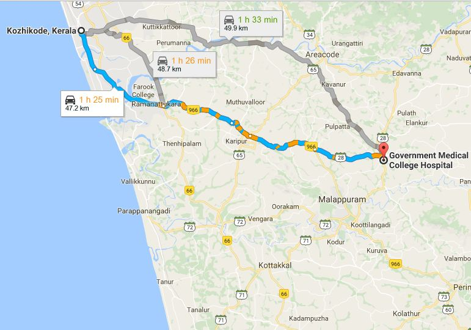

ADDRESS:
Govt. Medical College,
Manjeri,
Malappuram

Govt. Medical College,
Manjeri,
Malappuram
Manjeri Government Medical College, the sixth government medical college in the State,
inaugurated on 1 September 2013. It is at Manjery town. It is 47 Km South - East of Calicut.
Prayer meeting:Have a very initial prayer meeting held in Holy Cross church Manjery.
How to reach:Catch Manjery Bus from Calicut and get down at Medical college stop. From NIT and KMCT will get MAnjery Bus fom Mukkam.
Possibility:NIT,KMCT and MES Medical College can Support in making the gruop Stable.